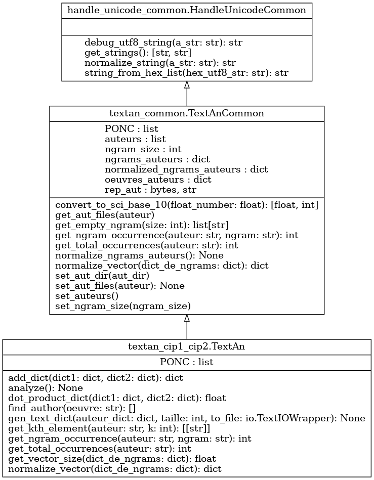

Module textan_cip1_cip2
Diagramme de classe
{kind=link}
Code du module
Ce fichier contient la classe TextAn, à utiliser pour résoudre la problématique. C’est un gabarit pour l’application de traitement des fréquences de mots dans les oeuvres d’auteurs divers.
Les méthodes apparaissant dans ce fichier définissent une API qui est utilisée par l’application de test test_textan.py Les paramètres d’entrée et de sortie (Application Programming Interface, API) sont définis, mais le code est à écrire au complet. Vous pouvez ajouter toutes les méthodes et toutes les variables nécessaires au bon fonctionnement du système
La classe TextAn est invoquée par la classe TestTextAn (contenue dans test_textan.py) :
Tous les arguments requis sont présents et accessibles dans args (dans le fichier test_textan.py)
- Les arguments proviennent :
soit du fichier de configuration test_textan_config.yml,
soit de la ligne de commande
- Notevous pouvez tester votre code en utilisant les commandes :
« python test_textan.py »
« python test_textan.py -h » (donne la liste des arguments possibles)
« python test_textan.py -v » (mode « verbose », qui indique les valeurs de tous les arguments)
- Note (2)vous pouvez modifier le fichier test_textan_config.yml :
Vous le trouverez dans le répertoire de travail (Problematique/data)
Les mêmes options existent dans le fichier test_textan_config.yml et en ligne de commande
Les paramètres passés en ligne de commande ont priorité sur ceux définis dans le fichier de configuration
Copyright 2018-2025, F. Mailhot et Université de Sherbrooke
- class textan_cip1_cip2.TextAn[source]
Bases :
TextAnCommonClasse à utiliser pour coder la solution à la problématique :
- La classe héritée TextAnCommon contient certaines fonctions de base pour faciliter le travail :
recherche des auteurs
ouverture des répertoires
obtention de la liste des oeuvres d’un auteur (get_aut_files(auteur))
et autres (voir la classe TextAnCommon pour plus d’information)
Les interfaces du code à développer sont présentes, mais tout le code est à écrire
- En particulier, il faut compléter les fonctions suivantes :
add_dict(dict1, dict2)
analyze()
dot_product_dict (dict1, dict2)
find_author (oeuvre)
gen_text_dict(auteur_dict, taille, to_file)
get_kth_element (auteur, k)
get_ngram_occurrence (auteur, ngram)
get_total_occurrences (auteur)
get_vector_size(dict)
normalize_vector(dict)
Copyright 2018-2025, F. Mailhot et Université de Sherbrooke
Initialize l’objet de type TextAn lorsqu’il est créé
- Args :
(void) : Utilise simplement les informations fournies dans la classe TextAnCommon
- Returns :
(void) : Ne fait qu’initialiser l’objet de type TextAn
- PONC = ['!', ';']
- static add_dict(dict1: dict, dict2: dict) dict[source]
Additionne deux vecteurs représentés par des dictionnaires Note : le vecteur de retour n’est PAS NORMALISÉ
- Args :
dict1 (dict) : le premier vecteur dict2 (dict) : le deuxième vecteur
- Returns :
sum_dict (dict) : La somme des deux vecteurs passés en paramètre
Copyright 2025, F. Mailhot et Université de Sherbrooke
- analyze() None[source]
Fait l’analyse des textes fournis, en traitant chaque oeuvre de chaque auteur
- Args :
void : toute l’information est contenue dans l’objet TextAn
- Returns :
void : ne retourne rien, toute l’information extraite est conservée dans des structures internes
- static dot_product_dict(dict1: dict, dict2: dict) float[source]
- Calcule le produit scalaire de deux vecteurs représentés par des dictionnaires
Note : ce produit scalaire n’est PAS normalisé
- Args :
dict1 (dict) : le premier vecteur dict2 (dict) : le deuxième vecteur
- Returns :
dot_product (float) : Le produit scalaire normalisé de deux vecteurs
Copyright 2024-2025, F. Mailhot et Université de Sherbrooke
- find_author(oeuvre: str) [][source]
- Après analyse des textes d’auteurs connus, retourner la liste d’auteurs
et le niveau de proximité (un nombre entre 0 et 1) de l’oeuvre inconnue avec les écrits de chacun d’entre eux
- Args :
oeuvre (str) : Nom du fichier contenant l’oeuvre d’un auteur inconnu
- Returns :
resultats (Liste[(string, float)]) : Liste de tuples (auteurs, niveau de proximité), où la proximité est un nombre entre 0 et 1)
- gen_text_dict(auteur_dict: dict, taille: int, to_file: TextIOWrapper) None[source]
Après analyse des textes d’auteurs connus, produire un texte selon des statistiques d’un dictionnaire
- Args :
auteur_dict (dict) : Dictionnaire à utiliser (soit d’un auteur, ou d’un amalgame) taille (int) : Taille du texte à générer to_file (io.TextIOWrapper) : Pointeur vers le fichier à créer.
- Returns :
void : ne retourne rien, le texte produit doit être écrit dans le fichier fourni
- get_kth_element(auteur: str, k: int) [[<class 'str'>]][source]
- Après analyse des textes d’auteurs connus, retourner la liste des k-ièmes plus fréquents
n-grammes de l’auteur indiqué Note : il peut y avoir plus d’un n-gramme avec le même nombre d’occurrences.
- Args :
auteur (str) : Nom de l’auteur à utiliser k (int) : Indice du n-gramme à retourner
- Returns :
ngram (List[Liste[string]]) : Liste de listes de mots composant le n-gramme recherché (il est possible qu’il y ait plus d’un n-gramme au même rang)
- get_ngram_occurrence(auteur: str, ngram: str) int[source]
Retourne le nombre d’occurrences du n-gramme pour cet auteur
- Args :
auteur (string) : le nom de l’auteur ngram (objet de type ngram) : le n-gramme dont on désire la fréquence
- Returns :
int : retourne le nombre d’occurrences du n-gramme pour l’auteur donné
Copyright 2024-2025, F. Mailhot et Université de Sherbrooke
- get_total_occurrences(auteur: str) int[source]
- Retourne le nombre total d’occurrences de n-grammes pour cet auteur
Représente le total de n-grammes pour l’ensemble des oeuvres de cet auteur
- Ce nombre est différent de la norme du vecteur :
il s’agit seulement du total d’occurrences de l’ensemble des ngrammes
Le calcul doit donner la somme des valeurs, et non la racine carrée de la somme des carrés des valeurs
- Args :
auteur (string) : le nom de l’auteur
- Returns :
int : retourne le nombre total d’occurrences pour l’auteur donné
Copyright 2024-2025, F. Mailhot et Université de Sherbrooke
- static get_vector_size(dict_de_ngrams: dict) float[source]
Calcule la longueur (norme) du vecteur (dictionnaire) de ngrams contenus dans un dictionnaire
- Args :
dict_de_ngrams (dict) : le vecteur de ngrams (dict) en question
- Returns :
taille (float) : La norme du vecteur (dict) est retournée
Copyright 2024-2025, F. Mailhot et Université de Sherbrooke
- normalize_vector(dict_de_ngrams: dict) dict[source]
Normalize le vecteur (dictionnaire), en divisant chaque occurrence par la taille totale
- Args :
dict_de_ngrams (dict) : le vecteur de n-grammes (dict) en question
- Returns :
(dict) : Une nouvelle version normalisée du dictionnaire est retournée
Copyright 2024-2025, F. Mailhot et Université de Sherbrooke
Note
Documentation créée le 20 févr. 2025.